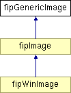

#include <FreeImagePlus.h>
Inheritance diagram for fipGenericImage:

Public Member Functions | |
Information functions | |
| virtual BOOL | isValid ()=0 |
| Returns TRUE if the image is allocated, FALSE otherwise. | |
|
|
Returns TRUE if the image is allocated, FALSE otherwise.
Implemented in fipImage. |